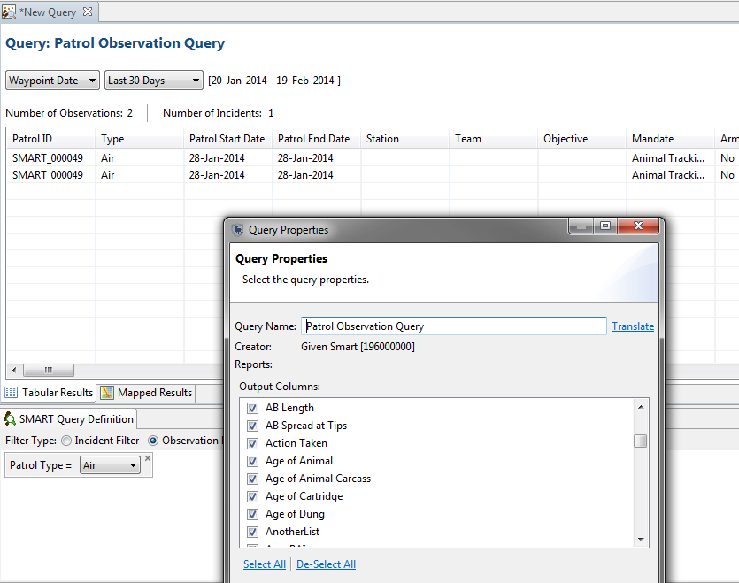

Incident queries are used to display details of patrol incidents.
These queries display the incident records which meet the requirements of the filters. No summarizing takes place (ie. no totals, amounts, aggregations, etc.). The resulting table includes all the patrol attributes associated with the incident as well as the incident location and time details. Observation details (data model fields) and not included in the results.

Queries can be viewed in a table or on a map. When displayed on a map only one mapping points will exist in that location.
Incident vs Observation
An observation is a single item observed and consists of exactly one category from the datamodel and all its associated attributes. An incident is a collection of observations that occur at the same point and same time (a Waypoint).